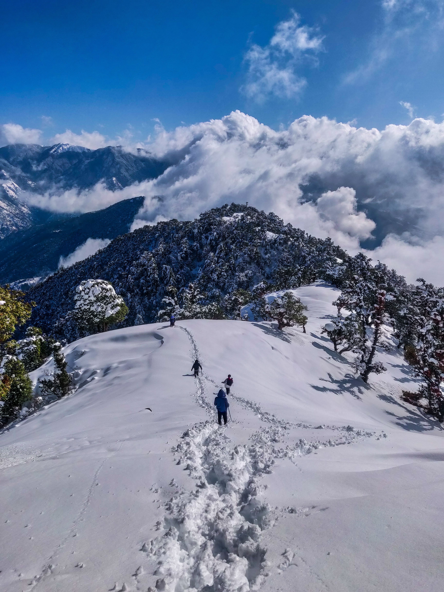

Welcome to our website üôè !


Shimla is the capital city of the Indian state of Himachal Pradesh, located in the northern part of the country in the Himalayan mountain range. It is a popular tourist destination known for its cool climate, beautiful natural surroundings, and colonial-era architecture. The city is situated at an altitude of 2,200 meters above sea level and is surrounded by forests, hills, and streams. It was once the summer capital of British India and has many historical landmarks, including the Viceregal Lodge and the Christ Church. Shimla is also home to a number of temples, churches, and other places of worship, as well as a vibrant shopping and dining scene.Among the most popular hill stations in India, Shimla holds a distinct place owing to its unique charm. Located at a distance of 342 km from the national capital, Delhi, Shimla is a great choice for a weekend getaway from Delhi and Chandigarh since there are so many places to visit in Shimla. Shimla is the capital city of Himachal Pradesh, and all it possesses and all it offers helps it easily justify its reputation and position as the capital city of a beautiful state, widely known for adventure activities and natural wonders. Laden with beautiful, dense forests of Pine, Oak, and Deodar, Shimla is refreshing in its very existence.  The picturesqueness of this beautiful hill station makes it an apt destination for photographers looking for perfect frames and nature enthusiasts who want explore the nature in its pristine form. It is quite interesting that despite being home to a large population, the biosphere of Shimla is still in an excellent form. Shimla exhibits a very relaxing mood to those who visit it in search of tranquility. Due to the plenty of activity options available here, Shimla is emerging as a popular destination for offbeat travel as well. People from all over India and beyond visit Shimla to experience an adventure which makes it a major hotspot for adventure activities in northern India. It is also home to some beautiful places with spectacular views, and some truly magnificent specimens of architecture can be found in Shimla. Shimla houses some beautiful Hindu temples, located at apt locations, offering spectacular views of the beautiful hill station and the nearby hills with a thick covering of green forests. Some of the most revered temples in Shimla are Jakhoo Temple, Tara Devi Temple, Mansa Devi Temple, etc. These temples are located at short distances from the city center, so if you prefer, you can trek up to these temples through the woods. Shimla has a plethora of interesting places to visit and explore. As Shimla once served as the Summer Capital of British India, some captivating buildings with brilliant neo-Gothic architecture exist here.
Jaipur is considered to be the capital of Rajasthan. It is famous across the country for its rich tradition and diverse culture. The variety of forts and palaces showcase the exciting history of Jaipur. This city was formed by the Maharaja Sawai Jai Singh II know as a great warrior in the ancient times. Although initially the capital of Rajasthan used to be Amber but considering the safety viewpoint, the capitals were changed later on. Since several construction and architecture were painted with the colour terracotta pink back in the earlier times, the name of the city popularly became the pink city. This city has been trendy amongst the visitors since earlier times, due to the availability of several famous hotels. One of which is the Raj Vilas which is known widely due to its beautiful architecture. These palaces in ancient times belonged to the kings and their families. Therefore, all of these hotels have a bit of royalty in them. Several locations in Jaipur are exquisite and have glorious architecture. For example, the widely recognized Raj Mandir Theatre. This place is usually crowded up with people across the world. This is a cinema hall that is created with magnificent interior and exterior design. This cinema hall was created back in 1976 by W.M. Namjoshi. The cost, along with the beauty of the hall, is continuously maintained. Therefore, many visitors get attracted to this city. Besides, the Zoological garden in Jaipur is popular for its biggest breeding centre for crocodile in the country. The capital of Rajasthan, i.e. Jaipur, is famous and is considered one of the best cities under the top ten throughout the country. Besides, it is the biggest city across the entire state of Rajasthan. There are several sightseeing locations present in Jaipur that are popular amongst the visitors. Some of the topmost sites available in Jaipur are Jal Mahal, Amber fort, Albert hall museum, Elephant safari, Jantar Mantar, Hawa Mahal, Nahargarh fort, City Palace, etc. Thus, the pink city, Jaipur is filled with attractive monuments, royal palaces, alluring cultures, and so on. Also, the development of Jaipur is drastically increasing. Some of the topmost sites available in Jaipur are Jal Mahal, Amber fort, Albert hall museum, Elephant safari, Jantar Mantar, Hawa Mahal, Nahargarh fort, City Palace, etc. Thus, the pink city, Jaipur is filled with attractive monuments, royal palaces, alluring cultures, and so on. Also, the development of Jaipur is drastically increasing.
At Lohagarh Farms we provide a trip down the memory lanes of your childhood. A place for urban dwellers who seek solitude and peace far from maddening cities, who are looking for authentic rural experiences to refresh their memories. Not many people have experienced before, destinations in rural parts of India with untouched natural beauty and serenity, where an earthy way of life can still be experienced. As you set off the beaten path, our rich rural experience let you discover the vibrant culture of a typical Indian village, indulge in delectable local food, uncover traditions and ways of rural life, rejuvenate your spirit with the folk music & dances, discuss local legends We aim to create employment opportunity for local villagers and artists by providing them with an opportunity to showcase and promote their talent to the general public, guests and visitors by bringing them all a common platform where guests can not only experience and enjoy local art and tradition but also feel the ways of life of rural India. At Lohagarh Farms we provide a trip down the memory lanes of your childhood. A place for urban dwellers who seek solitude and peace far from maddening cities, who are looking for authentic rural experiences to refresh their memories. Not many people have experienced before, destinations in rural parts of India with untouched natural beauty and serenity, where an earthy way of life can still be experienced. As you set off the beaten path, our rich rural experience let you discover the vibrant culture of a typical Indian village, indulge in delectable local food, uncover traditions and ways of rural life, rejuvenate your spirit with the folk music & dances, discuss local legends We aim to create employment opportunity for local villagers and artists by providing them with an opportunity to showcase and promote their talent to the general public, guests and visitors by bringing them all a common platform where guests can not only experience and enjoy local art and tradition but also feel the ways of life of rural India. At Lohagarh Farms we provide a trip down the memory lanes of your childhood. A place for urban dwellers who seek solitude and peace far from maddening cities, who are looking for authentic rural experiences to refresh their memories. Not many people have experienced before, destinations in rural parts of India with untouched natural beauty and serenity, where an earthy way of life can still be experienced.